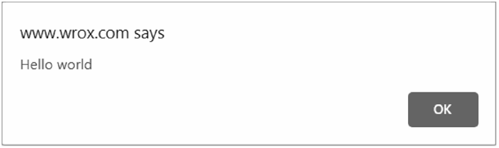
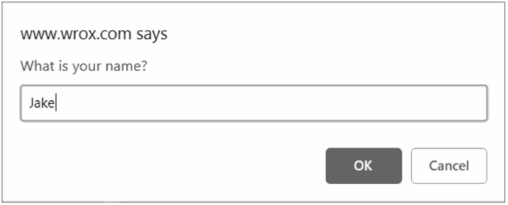

12.1 window对象
BOM的核心是window对象，表示浏览器的实例。window对象在浏览器中有两重身份，一个是ECMAScript中的Global对象，另一个就是浏览器窗口的JavaScript接口。这意味着网页中定义的所有对象、变量和函数都以window作为其Global对象，都可以访问其上定义的parseInt()等全局方法。
注意 因为
window对象的属性在全局作用域中有效，所以很多浏览器API及相关构造函数都以window对象属性的形式暴露出来。这些API将在全书各章中介绍，特别是第20章。另外，由于实现不同，某些
window对象的属性在不同浏览器间可能差异很大。本章不会介绍已经废弃的、非标准化或特定于浏览器的window属性。
12.1.1
Global作用域
因为window对象被复用为ECMAScript的Global对象，所以通过var声明的所有全局变量和函数都会变成window对象的属性和方法。比如：
var age = 29;
var sayage = () => alert(this.age);
alert(window.age); // 29
sayage(); // 29
window.sayage(); // 29这里，变量age和函数sayAge()被定义在全局作用域中，它们自动成为了window对象的成员。因此，变量age可以通过window.age来访问，而函数sayAge()也可以通过window.sayAge()来访问。因为sayAge()存在于全局作用域，this.age映射到window.age，所以就可以显示正确的结果了。
如果在这里使用let或const替代var，则不会把变量添加给全局对象：
let age = 29;
const sayage = () => alert(this.age);
alert(window.age); // undefined
sayage(); // undefined
window.sayage(); // typeerror: window.sayage is not a function另外，访问未声明的变量会抛出错误，但是可以在window对象上查询是否存在可能未声明的变量。比如：
// 这会导致抛出错误，因为oldvalue没有声明
var newvalue = oldvalue;
// 这不会抛出错误，因为这里是属性查询
// newvalue会被设置为undefined
var newvalue = window.oldvalue;记住，JavaScript中有很多对象都暴露在全局作用域中，比如location和navigator（本章后面都会讨论），因而它们也是window对象的属性。
12.1.2 窗口关系
top对象始终指向最上层（最外层）窗口，即浏览器窗口本身。而parent对象则始终指向当前窗口的父窗口。如果当前窗口是最上层窗口，则parent等于top（都等于window）。最上层的window如果不是通过window.open()打开的，那么其name属性就不会包含值，本章后面会讨论。
还有一个self对象，它是终极window属性，始终会指向window。实际上，self和window就是同一个对象。之所以还要暴露self，就是为了和top、parent保持一致。
这些属性都是window对象的属性，因此访问window.parent、window.top和window.self都可以。这意味着可以把访问多个窗口的window对象串联起来，比如window.parent.parent。
12.1.3 窗口位置与像素比
window对象的位置可以通过不同的属性和方法来确定。现代浏览器提供了screenLeft和screenTop属性，用于表示窗口相对于屏幕左侧和顶部的位置 ，返回值的单位是CSS像素。
可以使用moveTo()和moveBy()方法移动窗口。这两个方法都接收两个参数，其中moveTo()接收要移动到的新位置的绝对坐标 和
和 ；而
；而moveBy()则接收相对当前位置在两个方向上移动的像素数。比如：
// 把窗口移动到左上角
window.moveto(0,0);
// 把窗口向下移动100像素
window.moveby(0, 100);
// 把窗口移动到坐标位置(200, 300)
window.moveto(200, 300);
// 把窗口向左移动50像素
window.moveby(-50, 0);依浏览器而定，以上方法可能会被部分或全部禁用。
像素比
CSS像素是Web开发中使用的统一像素单位。这个单位的背后其实是一个角度：0.0213°。如果屏幕距离人眼是一臂长，则以这个角度计算的CSS像素大小约为1/96英寸。这样定义像素大小是为了在不同设备上统一标准。比如，低分辨率平板设备上12像素（CSS像素）的文字应该与高清4K屏幕下12像素（CSS像素）的文字具有相同大小。这就带来了一个问题，不同像素密度的屏幕下就会有不同的缩放系数，以便把物理像素（屏幕实际的分辨率）转换为CSS像素（浏览器报告的虚拟分辨率）。
举个例子，手机屏幕的物理分辨率可能是1920×1080，但因为其像素可能非常小，所以浏览器就需要将其分辨率降为较低的逻辑分辨率，比如640×320。这个物理像素与CSS像素之间的转换比率由window.devicePixelRatio属性提供。对于分辨率从1920×1080转换为640×320的设备，window.devicePixelRatio的值就是3。这样一来，12像素（CSS像素）的文字实际上就会用36像素的物理像素来显示。
window.devicePixelRatio实际上与每英寸像素数（DPI，dots per inch）是对应的。DPI表示单位像素密度，而window.devicePixelRatio表示物理像素与逻辑像素之间的缩放系数。
12.1.4 窗口大小
在不同浏览器中确定浏览器窗口大小没有想象中那么容易。所有现代浏览器都支持4个属性：innerWidth、innerHeight、outerWidth和outerHeight。outerWidth和outerHeight返回浏览器窗口自身的大小（不管是在最外层window上使用，还是在窗格<frame>中使用）。innerWidth和innerHeight返回浏览器窗口中页面视口的大小（不包含浏览器边框和工具栏）。
document.documentElement.clientWidth和document.documentElement.clientHeight返回页面视口的宽度和高度。
浏览器窗口自身的精确尺寸不好确定，但可以确定页面视口的大小，如下所示：
let pagewidth = window.innerwidth,
pageheight = window.innerheight;
if (typeof pagewidth != "number") {
if (document.compatmode == "css1compat"){
pagewidth = document.documentelement.clientwidth;
pageheight = document.documentelement.clientheight;
} else {
pagewidth = document.body.clientwidth;
pageheight = document.body.clientheight;
}
}这里，先将pageWidth和pageHeight的值分别设置为window.innerWidth和window.innerHeight。然后，检查pageWidth是不是一个数值，如果不是则通过document.compatMode来检查页面是否处于标准模式。如果是，则使用document.documentElement.clientWidth和document.documentElement.clientHeight；否则，就使用document.body.clientWidth和document.body.clientHeight。
在移动设备上，window.innerWidth和window.innerHeight返回视口的大小，也就是屏幕上页面可视区域的大小。Mobile Internet Explorer支持这些属性，但在document.documentElement.clientWidth和document.documentElement.clientHeight中提供了相同的信息。在放大或缩小页面时，这些值也会相应变化。
在其他移动浏览器中，document.documentElement.clientWidth和document.documentElement.clientHeight返回的布局视口的大小，即渲染页面的实际大小。布局视口是相对于可见视口的概念，可见视口只能显示整个页面的一小部分。Mobile Internet Explorer把布局视口的信息保存在document.body.clientWidth和document.body.clientHeight中。在放大或缩小页面时，这些值也会相应变化。
因为桌面浏览器的差异，所以需要先确定用户是不是在使用移动设备，然后再决定使用哪个属性。
注意 手机视口的概念比较复杂，有各种各样的问题。如果读者在做移动开发，推荐阅读Peter-Paul Koch发表在QuirksMode网站上的文章“A Tale of Two Viewports— Part Two”。
可以使用resizeTo()和resizeBy()方法调整窗口大小。这两个方法都接收两个参数，resizeTo()接收新的宽度和高度值，而resizeBy()接收宽度和高度各要缩放多少。下面看个例子：
// 缩放到100×100
window.resizeto(100, 100);
// 缩放到200×150
window.resizeby(100, 50);
// 缩放到300×300
window.resizeto(300, 300);与移动窗口的方法一样，缩放窗口的方法可能会被浏览器禁用，而且在某些浏览器中默认是禁用的。同样，缩放窗口的方法只能应用到最上层的window对象。
12.1.5 视口位置
浏览器窗口尺寸通常无法满足完整显示整个页面，为此用户可以通过滚动在有限的视口中查看文档。度量文档相对于视口滚动距离的属性有两对，返回相等的值：window.pageXoffset/window.scrollX和window.pageYoffset/window.scrollY。
可以使用scroll()、scrollTo()和scrollBy()方法滚动页面。这3个方法都接收表示相对视口距离的和坐标，这两个参数在前两个方法中表示要滚动到的坐标，在最后一个方法中表示滚动的距离。
// 相对于当前视口向下滚动100像素
window.scrollby(0, 100);
// 相对于当前视口向右滚动40像素
window.scrollby(40, 0);
// 滚动到页面左上角
window.scrollto(0, 0);
// 滚动到距离屏幕左边及顶边各100像素的位置
window.scrollto(100, 100);这几个方法也都接收一个ScrollToOptions字典，除了提供偏移值，还可以通过behavior属性告诉浏览器是否平滑滚动。
// 正常滚动
window.scrollto({
left: 100,
top: 100,
behavior: 'auto'
});
// 平滑滚动
window.scrollto({
left: 100,
top: 100,
behavior: 'smooth'
});12.1.6 导航与打开新窗口
window.open()方法可以用于导航到指定URL，也可以用于打开新浏览器窗口。这个方法接收4个参数：要加载的URL、目标窗口、特性字符串和表示新窗口在浏览器历史记录中是否替代当前加载页面的布尔值。通常，调用这个方法时只传前3个参数，最后一个参数只有在不打开新窗口时才会使用。
如果window.open()的第二个参数是一个已经存在的窗口或窗格（frame）的名字，则会在对应的窗口或窗格中打开URL。下面是一个例子：
// 与<a href="http://www.wrox.com" target="topframe"/>相同
window.open("http://www.wrox.com/", "topframe");执行这行代码的结果就如同用户点击了一个href属性为"http://www.wrox.com"，target属性为"topFrame"的链接。如果有一个窗口名叫"topFrame"，则这个窗口就会打开这个URL；否则就会打开一个新窗口并将其命名为"topFrame"。第二个参数也可以是一个特殊的窗口名，比如_self、_parent、_top或_blank。
-
弹出窗口
如果
window.open()的第二个参数不是已有窗口，则会打开一个新窗口或标签页。第三个参数，即特性字符串，用于指定新窗口的配置。如果没有传第三个参数，则新窗口（或标签页）会带有所有默认的浏览器特性（工具栏、地址栏、状态栏等都是默认配置）。如果打开的不是新窗口，则忽略第三个参数。特性字符串是一个逗号分隔的设置字符串，用于指定新窗口包含的特性。下表列出了一些选项。
设置 值 说明 fullscreen"yes"或"no"表示新窗口是否最大化。仅限IE支持 height数值 新窗口高度。这个值不能小于100 left数值 新窗口的x轴坐标。这个值不能是负值 location"yes"或"no"表示是否显示地址栏。不同浏览器的默认值也不一样。在设置为 "no"时，地址栏可能隐藏或禁用（取决于浏览器）Menubar"yes"或"no"表示是否显示菜单栏。默认为 "no"resizable"yes"或"no"表示是否可以拖动改变新窗口大小。默认为 "no"scrollbars"yes"或"no"表示是否可以在内容过长时滚动。默认为 "no"status"yes"或"no"表示是否显示状态栏。不同浏览器的默认值也不一样 toolbar"yes"或"no"表示是否显示工具栏。默认为 "no"top数值 新窗口的y轴坐标。这个值不能是负值 width数值 新窗口的宽度。这个值不能小于100 这些设置需要以逗号分隔的名值对形式出现，其中名值对以等号连接。（特性字符串中不能包含空格。）来看下面的例子：
window.open("http://www.wrox.com/", "wroxwindow", "height=400,width=400,top=10,left=10,resizable=yes");这行代码会打开一个可缩放的新窗口，大小为400像素×400像素，位于离屏幕左边及顶边各10像素的位置。
window.open()方法返回一个对新建窗口的引用。这个对象与普通window对象没有区别，只是为控制新窗口提供了方便。例如，某些浏览器默认不允许缩放或移动主窗口，但可能允许缩放或移动通过window.open()创建的窗口。跟使用任何window对象一样，可以使用这个对象操纵新打开的窗口。let wroxwin = window.open("http://www.wrox.com/", "wroxwindow", "height=400,width=400,top=10,left=10,resizable=yes"); // 缩放 wroxwin.resizeto(500, 500); // 移动 wroxwin.moveto(100, 100);还可以使用
close()方法像这样关闭新打开的窗口：wroxwin.close();这个方法只能用于
window.open()创建的弹出窗口。虽然不可能不经用户确认就关闭主窗口，但弹出窗口可以调用top.close()来关闭自己。关闭窗口以后，窗口的引用虽然还在，但只能用于检查其closed属性了：wroxwin.close(); alert(wroxwin.closed); // true新创建窗口的
window对象有一个属性opener，指向打开它的窗口。这个属性只在弹出窗口的最上层window对象（top）有定义，是指向调用window.open()打开它的窗口或窗格的指针。例如：let wroxwin = window.open("http://www.wrox.com/", "wroxwindow", "height=400,width=400,top=10,left=10,resizable=yes"); alert(wroxwin.opener === window); // true虽然新建窗口中有指向打开它的窗口的指针，但反之则不然。窗口不会跟踪记录自己打开的新窗口，因此开发者需要自己记录。
在某些浏览器中，每个标签页会运行在独立的进程中。如果一个标签页打开了另一个，而
window对象需要跟另一个标签页通信，那么标签便不能运行在独立的进程中。在这些浏览器中，可以将新打开的标签页的opener属性设置为null，表示新打开的标签页可以运行在独立的进程中。比如：let wroxwin = window.open("http://www.wrox.com/", "wroxwindow", "height=400,width=400,top=10,left=10,resizable=yes"); wroxwin.opener = null;把
opener设置为null表示新打开的标签页不需要与打开它的标签页通信，因此可以在独立进程中运行。这个连接一旦切断，就无法恢复了。
-
安全限制
弹出窗口有段时间被在线广告用滥了。很多在线广告会把弹出窗口伪装成系统对话框，诱导用户点击。因为长得像系统对话框，所以用户很难分清这些弹窗的来源。为了让用户能够区分清楚，浏览器开始对弹窗施加限制。
IE的早期版本实现针对弹窗的多重安全限制，包括不允许创建弹窗或把弹窗移出屏幕之外，以及不允许隐藏状态栏等。从IE7开始，地址栏也不能隐藏了，而且弹窗默认是不能移动或缩放的。Firefox 1禁用了隐藏状态栏的功能，因此无论
window.open()的特性字符串是什么，都不会隐藏弹窗的状态栏。Firefox 3强制弹窗始终显示地址栏。Opera只会在主窗口中打开新窗口，但不允许它们出现在系统对话框的位置。此外，浏览器会在用户操作下才允许创建弹窗。在网页加载过程中调用
window.open()没有效果，而且还可能导致向用户显示错误。弹窗通常可能在鼠标点击或按下键盘中某个键的情况下才能打开。注意 IE对打开本地网页的窗口再弹窗解除了某些限制。同样的代码如果来自服务器，则会施加弹窗限制。
-
弹窗屏蔽程序
所有现代浏览器都内置了屏蔽弹窗的程序，因此大多数意料之外的弹窗都会被屏蔽。在浏览器屏蔽弹窗时，可能会发生一些事。如果浏览器内置的弹窗屏蔽程序阻止了弹窗，那么
window.open()很可能会返回null。此时，只要检查这个方法的返回值就可以知道弹窗是否被屏蔽了，比如：let wroxwin = window.open("http://www.wrox.com", "_blank"); if (wroxwin == null){ alert("the popup was blocked!"); }在浏览器扩展或其他程序屏蔽弹窗时，
window.open()通常会抛出错误。因此要准确检测弹窗是否被屏蔽，除了检测window.open()的返回值，还要把它用try/catch包装起来，像这样：let blocked = false; try { let wroxwin = window.open("http://www.wrox.com", "_blank"); if (wroxwin == null){ blocked = true; } } catch (ex){ blocked = true; } if (blocked){ alert("the popup was blocked!"); }无论弹窗是用什么方法屏蔽的，以上代码都可以准确判断调用
window.open()的弹窗是否被屏蔽了。注意 检查弹窗是否被屏蔽，不影响浏览器显示关于弹窗被屏蔽的消息。
12.1.7 定时器
JavaScript在浏览器中是单线程执行的，但允许使用定时器指定在某个时间之后或每隔一段时间就执行相应的代码。setTimeout()用于指定在一定时间后执行某些代码，而setInterval()用于指定每隔一段时间执行某些代码。
setTimeout()方法通常接收两个参数：要执行的代码和在执行回调函数前等待的时间（毫秒）。第一个参数可以是包含JavaScript代码的字符串（类似于传给eval()的字符串）或者一个函数，比如：
// 在1秒后显示警告框
settimeout(() => alert("hello world!"), 1000);第二个参数是要等待的毫秒数，而不是要执行代码的确切时间。JavaScript是单线程的，所以每次只能执行一段代码。为了调度不同代码的执行，JavaScript维护了一个任务队列。其中的任务会按照添加到队列的先后顺序执行。setTimeout()的第二个参数只是告诉JavaScript引擎在指定的毫秒数过后把任务添加到这个队列。如果队列是空的，则会立即执行该代码。如果队列不是空的，则代码必须等待前面的任务执行完才能执行。
调用setTimeout()时，会返回一个表示该超时排期的数值ID。这个超时ID是被排期执行代码的唯一标识符，可用于取消该任务。要取消等待中的排期任务，可以调用clearTimeout()方法并传入超时ID，如下面的例子所示：
// 设置超时任务
let timeoutid = settimeout(() => alert("hello world!"), 1000);
// 取消超时任务
cleartimeout(timeoutid);只要是在指定时间到达之前调用clearTimeout()，就可以取消超时任务。在任务执行后再调用clearTimeout()没有效果。
注意 所有超时执行的代码（函数）都会在全局作用域中的一个匿名函数中运行，因此函数中的
this值在非严格模式下始终指向window，而在严格模式下是undefined。如果给setTimeout()提供了一个箭头函数，那么this会保留为定义它时所在的词汇作用域。
setInterval()与setTimeout()的使用方法类似，只不过指定的任务会每隔指定时间就执行一次，直到取消循环定时或者页面卸载。setInterval()同样可以接收两个参数：要执行的代码（字符串或函数），以及把下一次执行定时代码的任务添加到队列要等待的时间（毫秒）。下面是一个例子：
setinterval(() => alert("hello world!"), 10000);注意 这里的关键点是，第二个参数，也就是间隔时间，指的是向队列添加新任务之前等待的时间。比如，调用
setInterval()的时间为01:00:00，间隔时间为3000毫秒。这意味着01:00:03时，浏览器会把任务添加到执行队列。浏览器不关心这个任务什么时候执行或者执行要花多长时间。因此，到了01:00:06，它会再向队列中添加一个任务。由此可看出，执行时间短、非阻塞的回调函数比较适合setInterval()。
setInterval()方法也会返回一个循环定时ID，可以用于在未来某个时间点上取消循环定时。要取消循环定时，可以调用clearInterval()并传入定时ID。相对于setTimeout()而言，取消定时的能力对setInterval()更加重要。毕竟，如果一直不管它，那么定时任务会一直执行到页面卸载。下面是一个常见的例子：
let num = 0, intervalid = null;
let max = 10;
let incrementnumber = function() {
num++;
// 如果达到最大值，则取消所有未执行的任务
if (num == max) {
clearinterval(intervalid);
alert("done");
}
}
intervalid = setinterval(incrementnumber, 500);在这个例子中，变量num会每半秒递增一次，直至达到最大限制值。此时循环定时会被取消。这个模式也可以使用setTimeout()来实现，比如：
let num = 0;
let max = 10;
let incrementnumber = function() {
num++;
// 如果还没有达到最大值，再设置一个超时任务
if (num < max) {
settimeout(incrementnumber, 500);
} else {
alert("done");
}
}
settimeout(incrementnumber, 500);注意在使用setTimeout()时，不一定要记录超时ID，因为它会在条件满足时自动停止，否则会自动设置另一个超时任务。这个模式是设置循环任务的推荐做法。setInterval()在实践中很少会在生产环境下使用，因为一个任务结束和下一个任务开始之间的时间间隔是无法保证的，有些循环定时任务可能会因此而被跳过。而像前面这个例子中一样使用setTimeout()则能确保不会出现这种情况。一般来说，最好不要使用setInterval()。
12.1.8 系统对话框
使用alert()、confirm()和prompt()方法，可以让浏览器调用系统对话框向用户显示消息。这些对话框与浏览器中显示的网页无关，而且也不包含HTML。它们的外观由操作系统或者浏览器决定，无法使用CSS设置。此外，这些对话框都是同步的模态对话框，即在它们显示的时候，代码会停止执行，在它们消失以后，代码才会恢复执行。
alert()方法在本书示例中经常用到。它接收一个要显示给用户的字符串。与console.log可以接收任意数量的参数且能一次性打印这些参数不同，alert()只接收一个参数。调用alert()时，传入的字符串会显示在一个系统对话框中。对话框只有一个“OK”（确定）按钮。如果传给alert()的参数不是一个原始字符串，则会调用这个值的toString()方法将其转换为字符串。
警告框（alert）通常用于向用户显示一些他们无法控制的消息，比如报错。用户唯一的选择就是在看到警告框之后把它关闭。图12-1展示了一个警告框。

图 12-1
第二种对话框叫确认框，通过调用confirm()来显示。确认框跟警告框类似，都会向用户显示消息。但不同之处在于，确认框有两个按钮：“Cancel”（取消）和“OK”（确定）。用户通过单击不同的按钮表明希望接下来执行什么操作。比如，confirm("Are you sure?")会显示图12-2所示的确认框。
图 12-2
要知道用户单击了OK按钮还是Cancel按钮，可以判断confirm()方法的返回值：true表示单击了OK按钮，false表示单击了Cancel按钮或者通过单击某一角上的X图标关闭了确认框。确认框的典型用法如下所示：
if (confirm("are you sure?")) {
alert("i'm so glad you're sure!");
} else {
alert("i'm sorry to hear you're not sure.");
}在这个例子中，第一行代码向用户显示了确认框，也就是if语句的条件。如果用户单击了OK按钮，则会弹出警告框显示"I'm so glad you're sure!"。如果单击了Cancel，则会显示"I'm sorry to hear you're not sure."。确认框通常用于让用户确认执行某个操作，比如删除邮件等。因为这种对话框会完全打断正在浏览网页的用户，所以应该在必要时再使用。
最后一种对话框是提示框，通过调用prompt()方法来显示。提示框的用途是提示用户输入消息。除了OK和Cancel按钮，提示框还会显示一个文本框，让用户输入内容。prompt()方法接收两个参数：要显示给用户的文本，以及文本框的默认值（可以是空字符串）。调用prompt("What is your name?", "Jake")会显示图12-3所示的提示框。

图 12-3
如果用户单击了OK按钮，则prompt()会返回文本框中的值。如果用户单击了Cancel按钮，或者对话框被关闭，则prompt()会返回null。下面是一个例子：
let result = prompt("what is your name? ", "");
if (result !== null) {
alert("welcome, " + result);
}这些系统对话框可以向用户显示消息、确认操作和获取输入。由于不需要HTML和CSS，所以系统对话框是Web应用程序最简单快捷的沟通手段。
很多浏览器针对这些系统对话框添加了特殊功能。如果网页中的脚本生成了两个或更多系统对话框，则除第一个之外所有后续的对话框上都会显示一个复选框，如果用户选中则会禁用后续的弹框，直到页面刷新。
如果用户选中了复选框并关闭了对话框，在页面刷新之前，所有系统对话框（警告框、确认框、提示框）都会被屏蔽。开发者无法获悉这些对话框是否显示了。对话框计数器会在浏览器空闲时重置，因此如果两次独立的用户操作分别产生了两个警告框，则两个警告框上都不会显示屏蔽复选框。如果一次独立的用户操作连续产生了两个警告框，则第二个警告框会显示复选框。
JavaScript还可以显示另外两种对话框：find()和print()。这两种对话框都是异步显示的，即控制权会立即返回给脚本。用户在浏览器菜单上选择“查找”（find）和“打印”（print）时显示的就是这两种对话框。通过在window对象上调用find()和print()可以显示它们，比如：
// 显示打印对话框
window.print();
// 显示查找对话框
window.find();这两个方法不会返回任何有关用户在对话框中执行了什么操作的信息，因此很难加以利用。此外，因为这两种对话框是异步的，所以浏览器的对话框计数器不会涉及它们，而且用户选择禁用对话框对它们也没有影响。
Table of contents
- 版权声明
- 献词
- 译者序
- 序
- 前言
- 致谢
- 第 1 章 什么是JavaScript
- 第 2 章 HTML中的JavaScript
- 第 3 章 语言基础
- 第 4 章 变量、作用域与内存
- 第 5 章 基本引用类型
- 第 6 章 集合引用类型
- 第 7 章 迭代器与生成器
- 第 8 章 对象、类与面向对象编程
- 第 9 章 代理与反射
- 第 10 章 函数
- 第 11 章 期约与异步函数
- 第 12 章 BOM
- 第 13 章 客户端检测
- 第 14 章 DOM
- 第 15 章 DOM扩展
- 第 16 章 DOM2和DOM3
- 第 17 章 事件
- 第 18 章 动画与Canvas图形
- 第 19 章 表单脚本
- 第 20 章 JavaScript API
- 第 21 章 错误处理与调试
- 第 22 章 处理XML
- 第 23 章 JSON
- 第 24 章 网络请求与远程资源
- 第 25 章 客户端存储
- 第 26 章 模块
- 第 27 章 工作者线程
- 第 28 章 最佳实践
- 附录 A ES2018和ES2019
- 附录 B 严格模式
- 附录 C JavaScript库和框架
- 附录 D JavaScript工具
- 作者简介